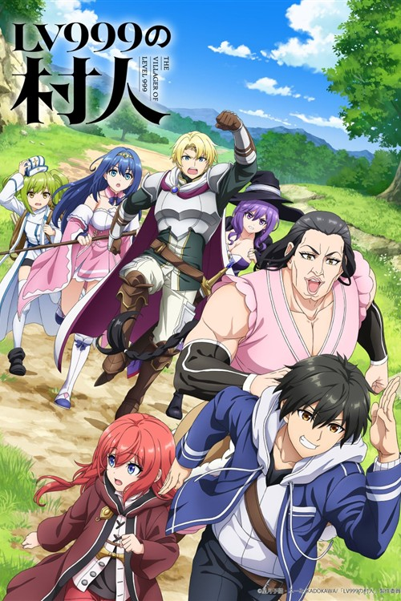

← Voltar para os animesFANTASIA • 2026
The Villager of Level 999
Koji Kagami é um aldeão que alcançou o nível 999. Ao conhecer Alice, uma garota demoníaca, ele parte em busca de um mundo onde humanos e demônios possam viver juntos.
Continuar assistindoTHE VILLAGER OF LEVEL 999 • 12 EPISÓDIOS
Seu progresso
0 XP22 XP por episódio
0/ 12 assistidos
Enter
Entre na sua conta para salvar seu progresso.